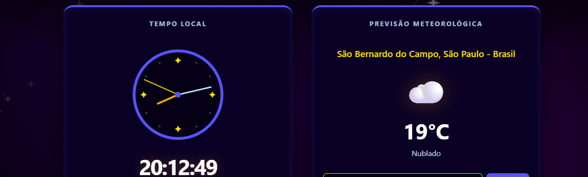

Meus Projetos
Repositórios e Experimentos

Calculadora Web
HTML5
CSS3
JavaScript
Canvas API
Math
UX Design
Uma calculadora funcional com interface moderna e operações básicas.

Lista de Tarefas
HTML5
CSS3
JavaScript
Canvas API
DOM Manipulation
Aplicação para gerenciamento de tarefas diárias com marcação de conclusão.

Hora e Clima
HTML5
CSS3
JavaScript
API Integration
Async/Await
Canvas API
Date API
Aplicação unificada que fornece dados meteorológicos em tempo real integrados com um relógio digital.

Guia de Primeiros Socorros
HTML5
CSS3
JavaScript
ES6+
Lucide Icons
Tailwind CSS
Uma página informativa com um guia simples e interativo para instruções de primeiros socorros.

Dashboard do Sistema Solar
HTML5
CSS3
Pandas
Plotly
Python
Streamlit Cloud
Dashboard informativo com algumas curiosidades e fatos sobre o Sistema Solar.

Automação Python
Python
Automation
Scripts para manipulação de arquivos e automação de rotinas.

Portfólio Pessoal
HTML5
CSS3
JavaScript
Canvas API
Modularização
Meu portfólio pessoal com minhas informações de contado e projetos. Ele é responsivo e com animações em Canvas.